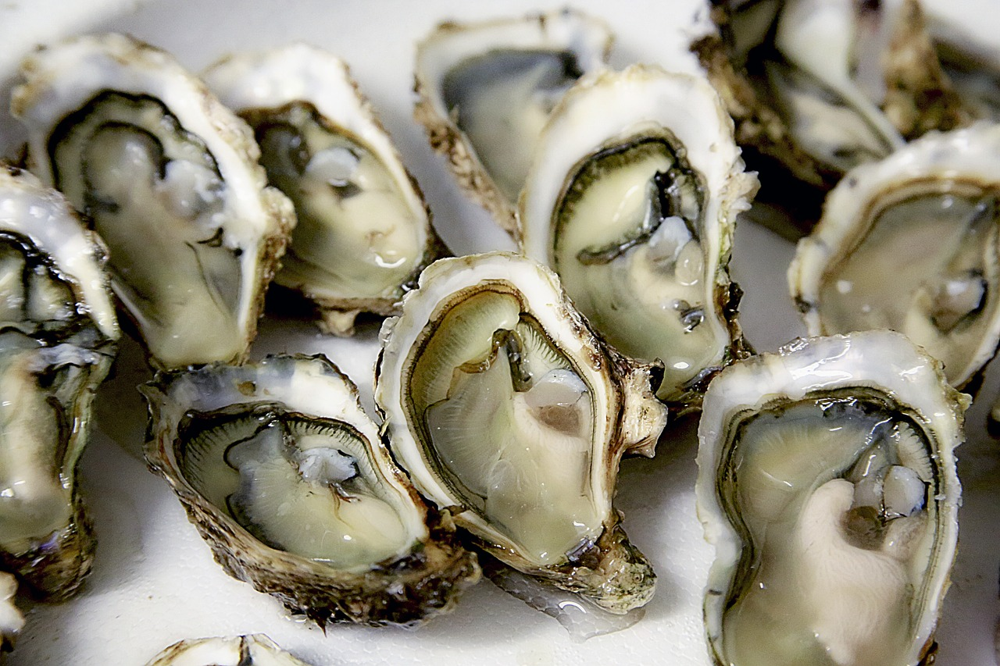

NON-VEGAN |
#1.Boiled ChickenChicken meat and products are generally a very popular food commodity worldwide, as chicken meat is characterized by low fat, low cholesterol content and high nutritional value (Choi et al., 2011). Consumption of chicken meat has increased steadily over the last few decades in many countries. However, chicken meat is limited to frying methods and various processing methods have not yet been developed in Korea. Thus, the variety of cooking methods for chicken products needs to be researched. |
#2.FISHFish is a really nutritious food, being rich in protein, vitamins and minerals which are essential to maintain good health. There are three types of fish: oily fish, white fish and shellfish. Oily fish are a rich source of vitamins A, D and E. They are also rich in essential omega-3 fatty acids which are essential for healthy brain, eye and nerve development in babies and children. They are also beneficial to your heart health and there is emerging evidence to suggest that eating fish reduces the risk of cancer and arthritis. |
#3.BEEFBeef as part of a meal with potatoes and spinach Beef is the culinary name for meat from cattle, particularly skeletal muscle. Humans have been eating beef since prehistoric times.[1] Beef is a source of high-quality protein and essential nutrients.[2] Beef skeletal muscle meat can be used as is by merely cutting into certain parts roasts, short ribs or steak (filet mignon, sirloin steak, rump steak, rib steak, rib eye steak, hanger steak, etc.), while other cuts are processed (corned beef or beef jerky). Trimmings, on the other hand, are usually mixed with meat from older, leaner (therefore tougher) cattle, are ground, minced or used in sausages. The blood is used in some varieties called blood sausage. Other parts that are eaten include other muscles and offal, such as the oxtail, liver, tongue, tripe from the reticulum or rumen, glands (particularly the pancreas and thymus, referred to as sweetbread), the heart, the brain (although forbidden where there is a danger of bovine spongiform encephalopathy, BSE, commonly referred to as mad cow disease), the kidneys, and the tender testicles of the bull (known in the United States as calf fries, prairie oysters, or Rocky Mountain oysters). Some intestines are cooked and eaten as is, but are more often cleaned and used as natural sausage casings. The bones are used for making beef stock. |
#4.OYSTERSOysters are commonly consumed either cooked or raw by humans as delicacy. Oysters are rich source of zinc, selenium, iron and calcium and also vitamin A, Vitamin B12. Dietary supplements also contain calcium carbonate from oyster shells. Apart from giving essential muscles and helping in building muscles, it also improves your love life. |  |
#5.CHICKEN CHESTIt is one of the widely available and affordable sources of protein available in the market. Rich in protein and low in fat and cholesterol as compared to other parts of chicken. This is Body Builders favorite as it adds lean muscle to the body. In 100 grams of chicken breast, you will get 23.5 grams of protein and 195 K cal of energy. |